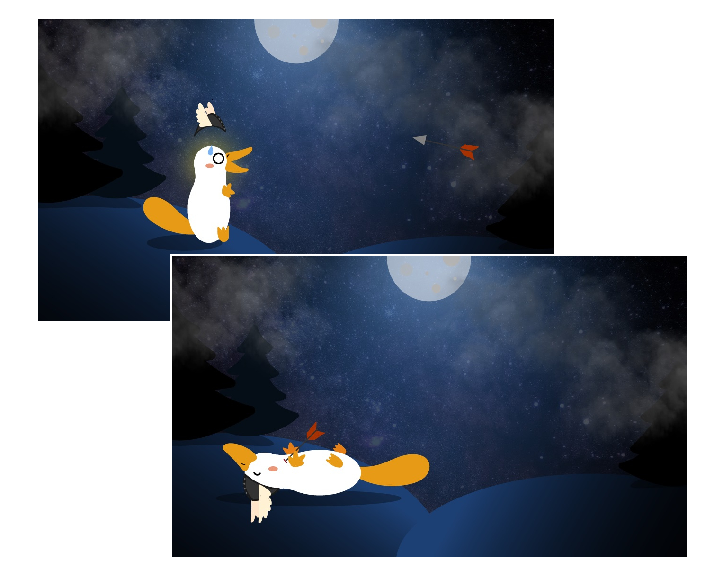

multimedia design
portfolio

Theme 3 - Basic Animation
In this theme we got introduced to Javascript for the first time, we learned a lot about CSS animations and character creation. We worked further with Adobe Illustrator in order to make our first backgrounds and characters. It resulted in creating a sprite animation on the background and then a Javascript controlled animation. We had a chance to work in pairs during Project Pool and finally, develop a gamified onboarding solution for future KEA students.
Sprite animation
In this assignment we had to create our own character and background and then put it all together in a sprite animation controlled with CSS. I made a platypus inspired by Nordic mythology that is getting shot with an arrow while standing in a dark, mystical forest.

Open the sprite